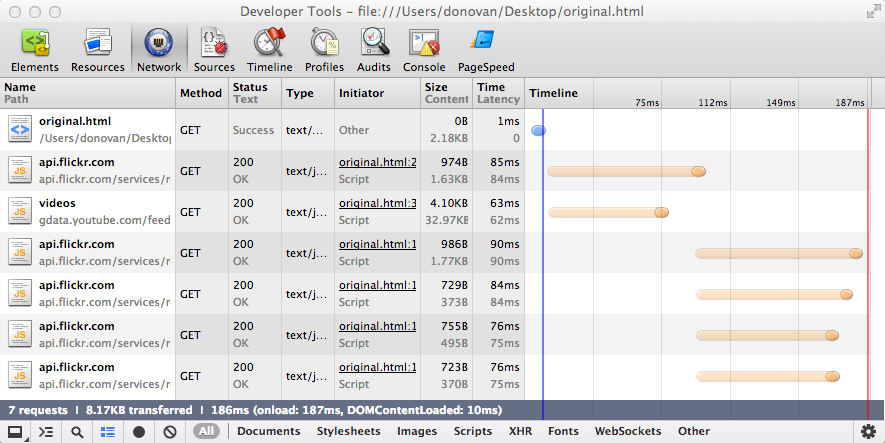
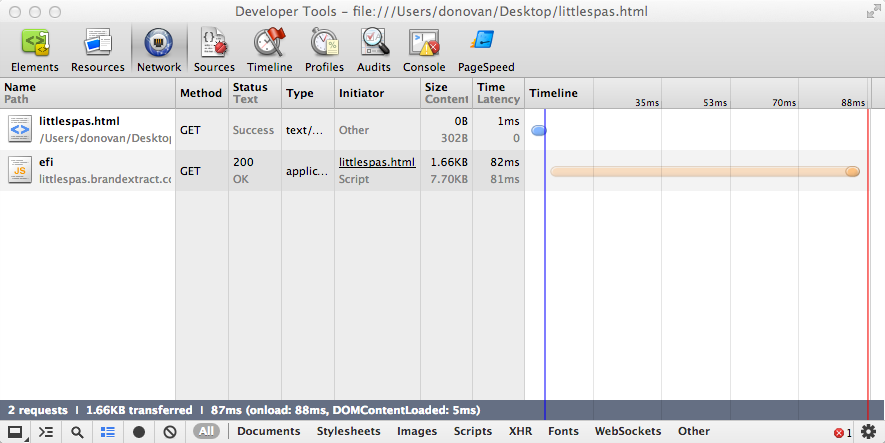

spas is a pragmatic tool for bundling multiple API requests into a single request/response for the end user. spas throttles, caches, parses, filters, concatenates and minifies API responses. It serves them all up in one tidy little package resulting in fewer requests and smaller downloads.
For example, something like this:

becomes:

Client side javascript performance is also improved. Transforms to the API responses can be performed on the server plus the filtered API responses are lighter in memory and can be manipulated faster on the client.